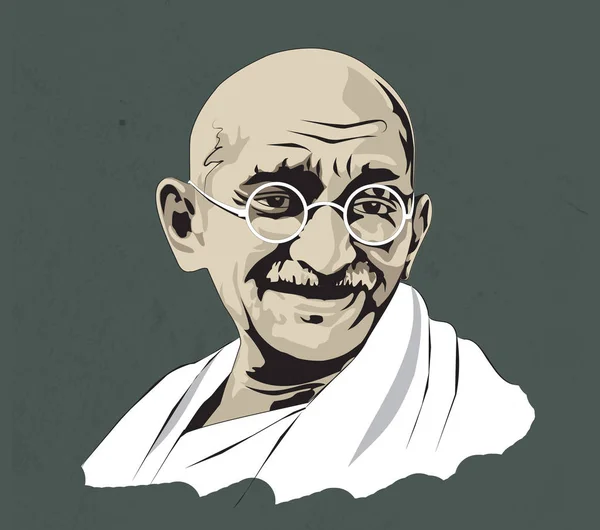
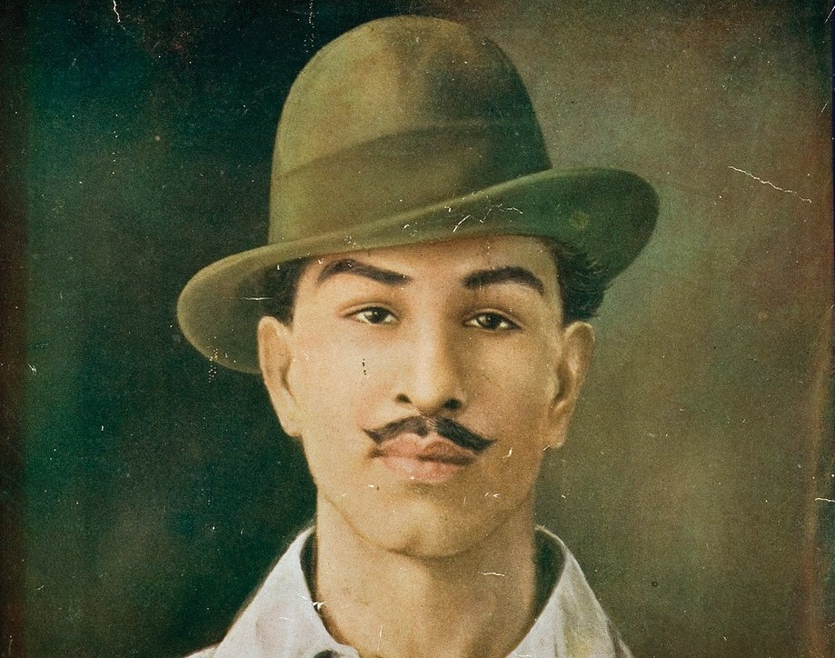
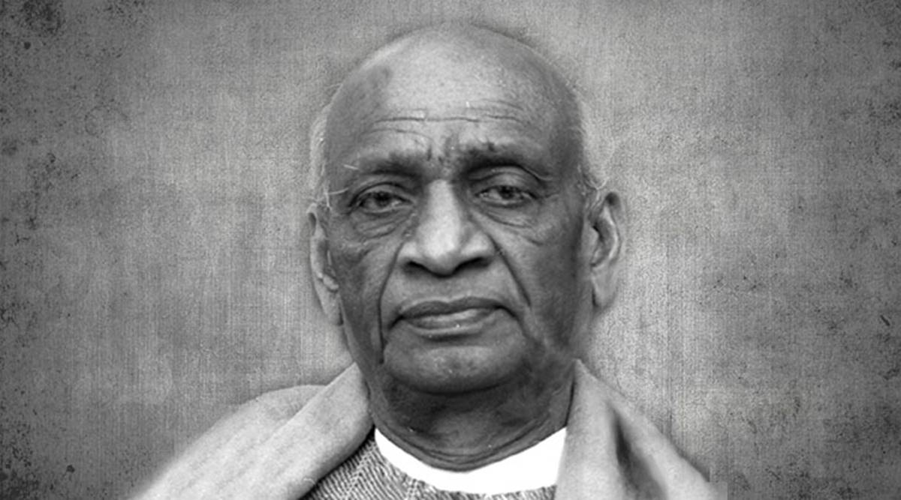
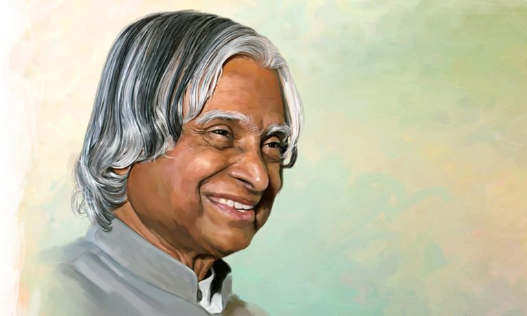
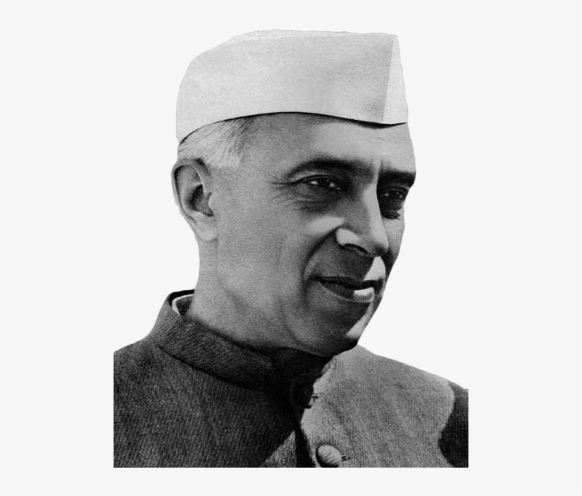
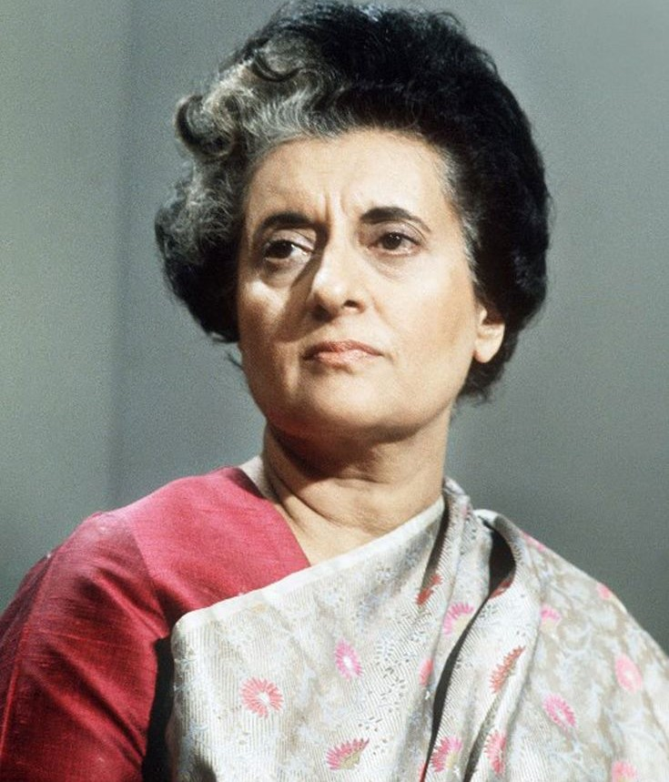

Mahatma GandhiMohandas Karamchand Gandhi was an Indian lawyer,anti-colonial nationalist and political ethicist who employed nonviolent resistance to lead the successful campaign for India's independence from British rule, and to later inspire movements for civil rights and freedom across the world. The honorific Mahātmā (Sanskrit: "great-souled", "venerable"), first applied to him in 1914 in South Africa, is now used throughout the world.Gandhi's birthday, 2 October, is commemorated in India as Gandhi Jayanti, a national holiday, and worldwide as the International Day of Nonviolence. Gandhi is commonly, though not formally, considered the Father of the Nation in India and was commonly called Bapu. Go back to name page |
 |
Bhagat SinghBhagat Singh (27 September 1907 – 23 March 1931) was a charismatic Indian revolutionary who participated in the mistaken murder of a junior British police officer in what was to be retaliation for the death of an Indian nationalist. He later took part in a largely symbolic bombing of the Central Legislative Assembly in Delhi and a hunger strike in prison, which—on the back of sympathetic coverage in Indian-owned newspapers—turned him into a household name in Punjab region, and after his execution at age 23 into a martyr and folk hero in Northern India. Borrowing ideas from Bolshevism and anarchism, he electrified a growing militancy in India in the 1930s, and prompted urgent introspection within the Indian National Congress's nonviolent but eventually successful campaign for India's independence. Go back to name page |
 |
Sardar Vallabhbhai Jhaverbhai PatelVallabhbhai Jhaverbhai Patel endeared as Sardar,[a] was an Indian statesman. He served as the first Deputy Prime Minister of India from 1947 to 1950. He was a barrister and a senior leader of the Indian National Congress, who played a leading role in the country's struggle for independence, guiding its integration into a united, independent nation.He was one of the conservative members of the Indian National Congress. In India and elsewhere, he was often called Sardar, meaning "chief" in Hindi, Urdu, and Persian. He acted as the Home Minister during the political integration of India and the Indo-Pakistani War of 1947. Go back to name page |
 |
A. P. J. Abdul KalamAvul Pakir Jainulabdeen Abdul Kalam was an Indian aerospace scientist who served as the 11th president of India from 2002 to 2007. He was born and raised in Rameswaram, Tamil Nadu and studied physics and aerospace engineering. He spent the next four decades as a scientist and science administrator, mainly at the Defence Research and Development Organisation (DRDO) and Indian Space Research Organisation (ISRO) and was intimately involved in India's civilian space programme and military missile development efforts.He thus came to be known as the Missile Man of India for his work on the development of ballistic missile and launch vehicle technology. Go back to name page |
 |
Jawaharlal NehruJawaharlal Nehru 14 November 1889 – 27 May 1964) was an Indian anti-colonial nationalist, secular humanist, social democrat[and author who was a central figure in India during the middle of the 20th century. Nehru was a principal leader of the Indian nationalist movement in the 1930s and 1940s. Upon India's independence in 1947, he served as the country's prime minister for 17 years. Nehru promoted parliamentary democracy, secularism, and science and technology during the 1950s, powerfully influencing India's arc as a modern nation. In international affairs, he steered India clear of the two blocs of the Cold War. A well-regarded author, his books written in prison, such as Letters from a Father to His Daughter (1929), An Autobiography (1936) and The Discovery of India (1946), have been read around the world. Go back to name page |
 | Indira GandhiIndira Priyadarshini Gandhi was an Indian politician and a central figure of the Indian National Congress. She was the 3rd prime minister of India and was also the first and, to date, only female prime minister of India. Gandhi was the daughter of Jawaharlal Nehru, the 1st prime minister of India. She served as prime minister from January 1966 to March 1977 and again from January 1980 until her assassination in October 1984, making her the second longest-serving Indian prime minister after her father.As prime minister, Gandhi was known for her political intransigency and unprecedented centralisation of power. Go back to name page |
 |